Regression experiments with Gaussian Likelihoods¶
This module contains all relevant functions to run experiments with Gaussian likelihood models.
General Notes¶
Performing regression experiments with Gaussian likelihood models. Two possibilities are considered:
Homoscedastic variance: The model only generates the input-dependent mean, and the variance is constant across inputs and preset. It is given by the command line argument
--pred_dist_std. These experiments can be run using the scripttrain_gl.py.Heteroscedastic variance: The model generates both an input-dependent mean and an input-dependent variance. These experiments can be run using the script
train_ghl.py.
Note that the models generated are Bayesian by default. However, a deterministic model can be used by setting the option --mean_only.
Furthermore, regression can be done using one of two toy regression datasets based on a cubic polynomial. In the basic setting, a polynomial with a single mode is generated. However if desired a bimodal distribution can be used by setting the option --noise=bimodal.
Unimodal 1D Toy Experiments¶
Please run the following command to see the available options for running 1D toy experiments.
$ python3 train_gl.py --help
Deterministic Gaussian Likelihood (homoscedastic noise)¶
The following run achieves lowest negative log-likelihood on the validation set for this model:
$ python3 train_gl.py --kl_scale=0 --train_sample_size=1 --val_sample_size=1 --n_iter=20001 --lr=0.0001 --mlp_arch=50,50 --net_act=relu --val_iter=1000 --num_train=20 --mean_only --noise=gaussian
Deterministic Gaussian Likelihood (heteroscedastic noise)¶
The following run achieves lowest negative log-likelihood on the validation set for this model:
$ python3 train_ghl.py --kl_scale=0 --train_sample_size=1 --val_sample_size=1 --batch_size=32 --n_iter=20001 --lr=0.0001 --mlp_arch=100,100 --net_act=sigmoid --val_iter=1000 --num_train=20 --mean_only --noise=gaussian
Gaussian Likelihood with BbB(homoscedastic noise)¶
The following run achieves lowest negative log-likelihood on the validation set for this model:
$ python3 train_gl.py --n_iter=20001 --lr=0.01 --train_sample_size=10 --mlp_arch=10,10 --net_act=relu --val_iter=1000 --val_sample_size=100 --num_train=20 --noise=gaussian
Gaussian Likelihood with BbB (heteroscedastic noise)¶
The following run achieves lowest negative log-likelihood on the validation set for this model:
$ python3 train_ghl.py --batch_size=16 --n_iter=20001 --lr=0.001 --train_sample_size=1 --prior_variance=1.0 --kl_scale=0.01 --mlp_arch=100 --net_act=relu --val_iter=1000 --val_sample_size=100 --num_train=20 --noise=gaussian
Bimodal 1D Toy Experiments¶
Deterministic Gaussian Likelihood (homoscedastic noise)¶
The following run with 20 training points achieves lowest negative log-likelihood on the validation set for this model:
$ python3 train_gl.py --kl_scale=0 --train_sample_size=1 --val_sample_size=1 --n_iter=20001 --lr=0.01 --mlp_arch=20,20,20 --net_act=sigmoid --val_iter=1000 --num_train=20 --mean_only --noise=bimodal
The following run with 50 training points achieves lowest negative log-likelihood on the validation set for this model:
$ python3 train_gl.py --kl_scale=0 --train_sample_size=1 --val_sample_size=1 --batch_size=32 --n_iter=20001 --lr=1e-05 --mlp_arch=100,100 --net_act=relu --val_iter=1000 --num_train=50 --mean_only --noise=bimodal
The following run with 1000 training points achieves lowest negative log-likelihood on the validation set for this model:
$ python3 train_gl.py --kl_scale=0 --train_sample_size=1 --val_sample_size=1 --n_iter=4001 --lr=0.01 --mlp_arch=20,20,20 --net_act=sigmoid --val_iter=1000 --num_train=1000 --mean_only --noise=bimodal
The following run with 1000 training points and ground-truth predictive variance achieves lowest negative log-likelihood on the validation set for this model:
python3 train_gl.py –kl_scale=0 –train_sample_size=1 –val_sample_size=1 –n_iter=1001 –lr=0.01 –pred_dist_std=50.08991914547278 –mlp_arch=20,20,20 –net_act=sigmoid –val_iter=1000 –num_train=1000 –mean_only –noise=bimodal
Deterministic Gaussian Likelihood (heteroscedastic noise)¶
The following run with 20 training points achieves lowest negative log-likelihood on the validation set for this model:
$ python3 train_ghl.py --kl_scale=0 --train_sample_size=1 --val_sample_size=1 --n_iter=10001 --lr=0.001 --mlp_arch=20,20,20 --net_act=relu --val_iter=1000 --num_train=20 --mean_only --noise=bimodal
The following run with 50 training points achieves lowest negative log-likelihood on the validation set for this model:
$ python3 train_ghl.py --kl_scale=0 --train_sample_size=1 --val_sample_size=1 --n_iter=10001 --lr=0.001 --mlp_arch=50,50 --net_act=relu --val_iter=1000 --num_train=50 --mean_only --noise=bimodal --publication_style
The following run with 1000 training points achieves lowest negative log-likelihood on the validation set for this model:
$ python3 train_ghl.py --kl_scale=0 --train_sample_size=1 --val_sample_size=1 --n_iter=5001 --lr=0.01 --mlp_arch=20,20,20 --net_act=relu --val_iter=1000 --num_train=1000 --mean_only --noise=bimodal
Gaussian Likelihood with BbB(homoscedastic noise)¶
The following run with 20 training points achieves lowest negative log-likelihood on the validation set for this model:
$ python3 train_gl.py --n_iter=10001 --lr=0.01 --train_sample_size=1 --mlp_arch=50,50 --net_act=relu --val_iter=1000 --val_sample_size=100 --num_train=20 --noise=bimodal
The following run with 50 training points achieves lowest negative log-likelihood on the validation set for this model:
$ python3 train_gl.py --disable_lrt_test --batch_size=32 --n_iter=10001 --lr=0.0001 --train_sample_size=1 --prior_variance=1.0 --local_reparam_trick --kl_scale=1.0 --mlp_arch=100 --net_act=relu --val_iter=1000 --val_sample_size=100 --num_train=50 --noise=bimodal --publication_style
The following run with 1000 training points achieves lowest negative log-likelihood on the validation set for this model:
$ python3 train_gl.py --disable_lrt_test --n_iter=3001 --lr=0.01 --train_sample_size=20 --local_reparam_trick --mlp_arch=20,20,20 --net_act=relu --val_iter=1000 --val_sample_size=100 --num_train=1000 --noise=bimodal
Gaussian Likelihood with BbB (heteroscedastic noise)¶
The following run with 20 training points achieves lowest negative log-likelihood on the validation set for this model:
$ python3 train_ghl.py --disable_lrt_test --n_iter=30001 --lr=0.01 --train_sample_size=10 --local_reparam_trick --mlp_arch=10,10 --net_act=sigmoid --val_iter=1000 --val_sample_size=100 --num_train=20 --noise=bimodal
The following run with 50 training points achieves lowest negative log-likelihood on the validation set for this model:
$ python3 train_ghl.py --disable_lrt_test --batch_size=32 --n_iter=30001 --lr=0.001 --train_sample_size=10 --prior_variance=1.0 --local_reparam_trick --kl_scale=0.01 --mlp_arch=10,10 --net_act=relu --val_iter=1000 --val_sample_size=100 --num_train=50 --noise=bimodal
The following run with 1000 training points achieves lowest negative log-likelihood on the validation set for this model:
$ python3 train_ghl.py --disable_lrt_test --n_iter=30001 --lr=0.01 --train_sample_size=10 --local_reparam_trick --mlp_arch=10,10 --net_act=relu --val_iter=1000 --val_sample_size=100 --num_train=1000 --noise=bimodal
Bimodal 2D Toy Experiments¶
Please run the following command to see the available options for running 2D toy experiments.
$ python3 train_gl_2d.py --help
Deterministic Gaussian Likelihood (homoscedastic noise)¶
The following run achieves lowest negative log-likelihood on the validation set for this model:
$ python3 train_gl_2d.py --kl_scale=0 --train_sample_size=1 --val_sample_size=1 --n_iter=10001 --lr=0.01 --pred_dist_std=17 --mlp_arch="20,20,20" --net_act=relu --val_iter=1000 --num_train=3000 --mean_only --noise=bimodal --offset=15 --cov=300,20
Deterministic Gaussian Likelihood (heteroscedastic noise)¶
The following run achieves lowest negative log-likelihood on the validation set for this model:
$ python3 train_ghl_2d.py --kl_scale=0 --train_sample_size=1 --val_sample_size=1 --n_iter=100001 --lr=0.0001 --mlp_arch=20,20,20 --net_act=relu --val_iter=1000 --num_train=3000 --mean_only --noise=bimodal --offset=15 --cov=300,20
Steering Angle Prediction Experiments¶
Please run the following command to see the available options for running 1D toy experiments.
$ python3 train_gl_udacity.py --help
Deterministic Gaussian Likelihood (homoscedastic noise)¶
The following run achieves lowest negative log-likelihood on the validation set for this model:
$ python3 train_gl_udacity.py --kl_scale=0 --train_sample_size=1 --val_sample_size=1 --batch_size=32 --epochs=20 --lr=0.0001 --adam_beta1=0.7 --clip_grad_norm=-1 --pred_dist_std=0.05 --net_type=iresnet --iresnet_use_fc_bias --store_models --use_empty_test_set --num_plotted_predictions=8 --mean_only
Steering Angle Prediction Experiments¶
Deterministic Gaussian Likelihood (homoscedastic noise)¶
The following run with a Resnet-18 achieves lowest negative log-likelihood on the validation set for this model:
$ python3 train_gl_udacity.py --use_empty_test_set --num_plotted_predictions=8 --mean_only --batch_size=64 --epochs=30 --lr=0.0001 --adam_beta1=0.5 --clip_grad_norm=100.0 --pred_dist_std=0.02 --kl_scale=0 --net_type=iresnet --iresnet_use_fc_bias --net_act=relu --train_sample_size=1 --val_sample_size=1
Deterministic Gaussian Likelihood (heteroscedastic noise)¶
The following run with a Resnet-18 achieves lowest negative log-likelihood on the validation set for this model:
$ python3 train_ghl_udacity.py --use_empty_test_set --mean_only --val_set_size=5000 --batch_size=32 --epochs=30 --lr=0.0001 --adam_beta1=0.9 --clip_grad_value=-1 --clip_grad_norm=-1.0 --prior_variance=1.0 --pred_dist_std=3 --kl_scale=0 --net_type="iresnet" --iresnet_use_fc_bias --net_act="relu" --train_sample_size=1 --val_sample_size=1
API¶
Helper functions for training¶
A collection of helper functions for training to keep other scripts clean.
-
gaussian_likelihoods.train_utils.compute_cross_entropy(T, Y, sigma=None, reduction='mean', ndims=1)[source]¶ Returns the regression cross entropy loss.
This function deals with a single model, and the sum for the MC estimate is therefore done outside this function.
This function should be used as loss function for models with heteroscedastic Gaussian likelihood, as it allows to learn the variances. This function is derived by minimizing the KL divergence between ground truth and Gaussian model likelihood (for a derivation see dosctring of function
compute_loss()). It computes the following loss: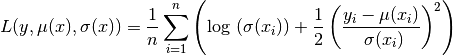
Note that it can also be derived from the KL between two gaussians:
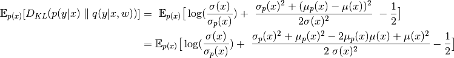
where
 is the groundtruth,
is the groundtruth,  is the predictive distribution, and
is the predictive distribution, and  and
and  are the input-dependent means and standard deviations of the groundtruth.
Now for machine learning applications we assume we can’t have
access to the groundtruth, so we don’t have access to ,
instead we have access to observations
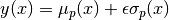 where
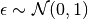.
are the input-dependent means and standard deviations of the groundtruth.
Now for machine learning applications we assume we can’t have
access to the groundtruth, so we don’t have access to ,
instead we have access to observations
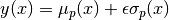 where
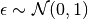.![\mathbb{E}_{p(x)}[D_{KL}(p(y|x) \parallel q(y|x,w))] &= \
\mathbb{E}_{p(x)} \big[\log(\frac{\sigma(x)}{\sigma_p(x)}) + \
\frac{\mathbb{E}_{p(y|x)}[y^2] - 2\mathbb{E}_{p(y|x)}[y] \mu(x)+ \
\mu(x)^2}{2 \sigma(x)^2} - \frac{1}{2} \big] \\
&= \mathbb{E}_{p(x)} \big[\log(\frac{\sigma(x)}{\sigma_p(x)}) + \
\frac{\mathbb{E}_{p(y|x)}[y^2 - 2 y \mu(x)+ \
\mu(x)^2]}{2 \sigma(x)^2} - \frac{1}{2} \big] \\
&= \mathbb{E}_{p(x, y)} \big[\log(\frac{\sigma(x)}{\sigma_p(x)}) + \
\frac{(y - \mu(x))^2}{2 \sigma(x)^2} - \frac{1}{2} \big] \\](_images/math/bad4130960540099d2bd03a723e5dbc68b9548b9.png)
where we have used that 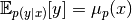 and 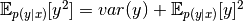 so 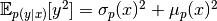. Recall that
is unknown, and drops from the optimization, so
we recover the expression above when doing an MC estimate.In practice, since entorpy-related terms drop, for optimization we only care about the negative log-likelihood term up to some constants.
- Parameters
(...) – See docstring of function
compute_mse().ndims – Whether regression output is 1D or 2D.
sigma (float, optional) – The standard deviation of the predictive distribution. Only provided for Gaussian models with homoscedastic variance.
- Returns
The cross-entropy.
-
gaussian_likelihoods.train_utils.compute_entropy_gaussian(mnet, config, x_torch, num_samples=1000, num_models=100)[source]¶ Compute the entropy of a Gaussian posterior predictive distribution.
We consider a Bayesian setting with a posterior predictive distribution:
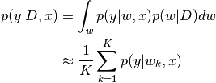
The differential entropy of this posterior predictive is given by:
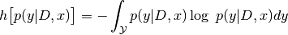
If we can draw samples from the posterior and both sample from and evaluate the likelihood 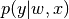, we can estimate the differential entropy of the posterior predictive using a double Monte Carlo estimate as follows:
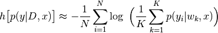
where
 is a Monte Carlo sample from the posterior
predictive (not from a specific model). A sample
is a Monte Carlo sample from the posterior
predictive (not from a specific model). A sample  can be drawn from
the posterior predictive as follows:
can be drawn from
the posterior predictive as follows: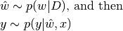
- Parameters
mnet – The main network.
config – The configuration.
x_torch (torch.Tensor) – The inputs.
num_samples (int) – The number of samples to use for each input.
num_models (int) – The number of models to sample for Bayesian networks.
- Returns
- The averaged entropy across weight samples for the entire
input range.
- Return type
(np.array)
-
gaussian_likelihoods.train_utils.compute_mse(T, Y, ndims=1)[source]¶ Returns the MSE between predictions and targets.
This function deals with a single model, and the sum for the MC estimate is therefore done outside this function.
This function should be used as loss function for models with homoscedastic Gaussian likelihood, as it does not allow to learn the variances.
This function simply computes:
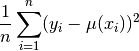
It can be derived from the loss expression found in
compute_loss().Since the variances are not learned in this setting, 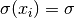, and the term 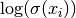 is constant w.r.t. the learnable parameters and can be dropped. We therefore obtain:
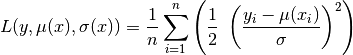
which is simply the MSE scaled by 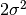, where
 corresponds to our parameter
corresponds to our parameter config.pred_dist_std.Note that it can also be derived from the KL between two gaussians:
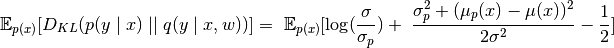
where
is the groundtruth,
is the predictive distribution, and and 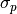
are the input-dependent means and the fixed standard deviation of the
groundtruth. Again, since only the means are learned we can drop constant
terms and obtain the same expression as above.
-
gaussian_likelihoods.train_utils.compute_nll(T, Y, sigma=None, ndims=1)[source]¶ Compute the negative log-likehood of a Gaussian.
It computes the following quantity:
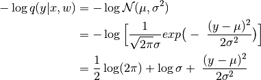
Assuming i.i.d. data,
 is a product of the probabilities
of individual samples, which corresponds to a sum in log scale.
is a product of the probabilities
of individual samples, which corresponds to a sum in log scale.- Parameters
T – The target tensor. It has shape
[batch_size, 1]since the loss is comupted separately for each weight sample.Y – Output tensor consisting of means. Same shape as
Tfor cases with homoscedastic variance, else it will have a second column with the variances.sigma (float, optional) – The standard deviation of the predictive distribution. Only provided for Gaussian models with homoscedastic variance.
ndims (int) – Dimensionality of the output space.
- Returns
The negative log-likelihood.
- Return type
(float)